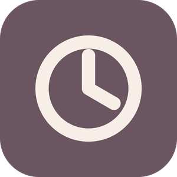

Aviso de privacidad de Cronos
En corto
- Cronos guarda tus tareas en tu computadora. Sin Cronos Plus nada sale de ella.
- Con Cronos Plus y tu cuenta, tus tareas se guardan en la nube para tenerlas en todas tus PCs.
- No vendemos tus datos, no hay publicidad y no usamos herramientas de analítica de terceros.
- Los pagos los cobra Microsoft; nunca vemos los datos de tu tarjeta.
Qué se guarda en tu computadora
Tus tareas, subtareas, notas, adjuntos, sesiones de foco y tu configuración se guardan en una base de datos dentro de tu perfil de Windows. Si activas el respaldo automático, se copia a la carpeta que elijas (por defecto, Documentos\Cronos\Respaldos).
Cronos también lleva un registro técnico (errores y eventos de la app) en tu equipo para poder diagnosticar fallas. No incluye el contenido de tus tareas ni contraseñas, y solo sale de tu PC si tú lo copias y lo envías.
Qué se guarda en la nube Cronos Plus
Si tienes Cronos Plus e inicias sesión, se sincroniza con nuestro servicio en la nube (alojado en Supabase):
- Tu cuenta: correo electrónico y los datos de inicio de sesión. Si entras con Google, recibimos tu correo y nombre de tu cuenta de Google; no recibimos tu contraseña.
- Tus datos de Cronos: tareas, subtareas, notas, sesiones de foco, preferencias (incluido el enlace de calendario .ics, si lo pusiste) y los archivos que adjuntes.
Cada cuenta solo puede leer y escribir sus propios datos (reglas de seguridad a nivel de fila en la base de datos y carpetas por usuario para los adjuntos). Todo viaja cifrado (HTTPS) y la sesión en tu PC se guarda cifrada con la protección de datos de Windows.
Tareas compartidas Cronos Plus
Si compartes una tarea con otra cuenta de Cronos, esa persona ve la tarea con sus subtareas, notas y adjuntos, y tu correo como quien se la compartió. Tú ves su correo en la lista de la tarea. Puedes dejar de compartirla cuando quieras y la otra persona puede dejar de verla; en ese momento se quita de su Cronos.
Tu calendario de Outlook o Teams Cronos Plus
Si pegas el enlace .ics de tu calendario, Cronos lo descarga directamente desde tu PC para mostrar tus juntas. Las juntas no se suben a nuestra nube; solo se guarda el enlace en tus preferencias para que funcione en tus otras PCs.
Pagos
La suscripción a Cronos Plus se compra y administra en la Microsoft Store. Microsoft procesa el pago según su declaración de privacidad. Cronos solo consulta a la Store si tu suscripción está activa.
Para qué usamos tus datos
Únicamente para que Cronos funcione: mostrar y sincronizar tus tareas, avisarte y respaldar. No los usamos para publicidad, no hacemos perfiles y no los compartimos con nadie, salvo con los proveedores que hacen posible el servicio (Supabase para la nube, Google si eliges entrar con Google, Microsoft para los pagos) o cuando la ley lo exija.
Cuánto tiempo y cómo borrarlos
- Lo que borras en Cronos se quita de tu PC a los 30 días y de la nube a los 90 (ese margen permite que tus otras PCs también se enteren).
- Si cancelas Plus, tus datos en la nube se conservan para cuando vuelvas, a menos que pidas borrarlos.
- Para borrar tu cuenta y todo lo que hay en la nube (tareas, adjuntos y preferencias) usa Configuración → Cuenta → Borrar cuenta. Se borra al momento. Si ya no tienes la app, escríbenos a solis.pablo2612@gmail.com desde el correo de tu cuenta y lo borramos en un máximo de 30 días.
- Para borrar lo de tu PC, desinstala Cronos y elimina la carpeta de respaldos si la usaste.
En México puedes ejercer tus derechos ARCO (acceso, rectificación, cancelación y oposición) escribiendo al mismo correo.
Menores
Cronos no está dirigido a menores de 13 años y no recopilamos a sabiendas datos de ellos.
Cambios y contacto
Si cambiamos este aviso, actualizamos la fecha de arriba y lo mencionamos en las novedades de la app. Dudas: solis.pablo2612@gmail.com.